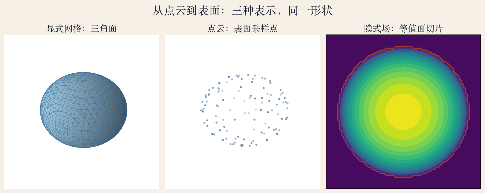
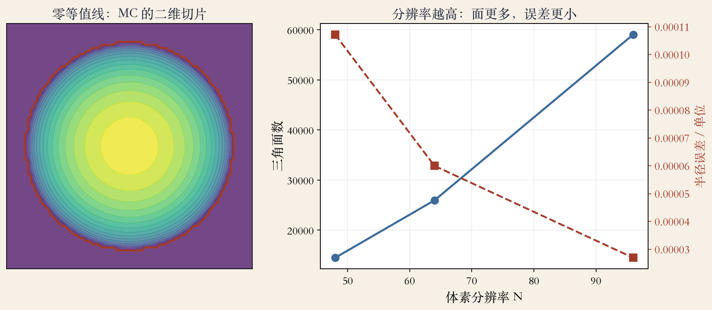
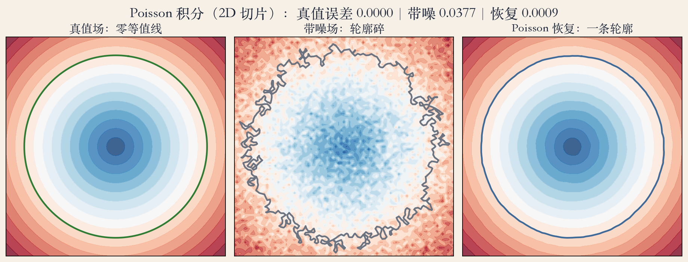

表面重建 · 开场
三种存法：网格、点云、隐式场
- 显式网格存三角面，点云存采样点。
- 隐式场给每个位置一个内外值。
- 三种表示对应三种工程取舍。
- 终点是能渲染、能测量的表面。
依据：原书第 825–826 页
三种表示
显式网格：三角面
点云：采样点
隐式场：内外值
三类表示 · 同一个球
同一个球，三种数据
- 左图三角网格，有顶点和连接关系。
- 中图只有采样点，没有面。
- 右图每个格点存一个数，红线是零。
- 书上第 825–826 页：显式、点、体表示。
依据：原书第 825–826 页

三种表示：显式网格、点云、隐式场切片，同一球体｜程序生成，未用教材或论文原图
显式网格 · 拓扑假设
网格：拓扑一旦定死
- 书上第 827 页：参数化模型假设拓扑固定。
- 要长洞、合并、裂开，就得重新网格化。
- 隐式场的表面是零等值面，拓扑能变。
- 网格渲染成熟，但难处理大变形。
依据：原书第 827 页
点云转隐式 · 法向
点云转隐式：先估法向
- 书上第 829 页：先转符号距离或内外函数。
- 法向把里面和外面分开。
- 只留正负号，就得到 0/1 占据函数。
- 法向不准，表面附近就会抖。
依据：原书第 829 页
符号距离
绝对值：到表面距离
符号：内负外正
只留符号：占据函数
隐式面 · 内外函数
隐式面：F 等于 0 的那层
- 书上第 831 页：F 小于 0 在里面。
- F 大于 0 在外面，F 等于 0 是表面。
- 梯度指向外法向，单位化就是法向场。
- 场可存规则网格，也可存八叉树。
依据：原书第 831 页
F(x,y,z) = 0
F<0 在内，F>0 在外；梯度指外法向
等值面提取 · 逐格查表
Marching Cubes：逐格查表连面
- 每个格子看八个角的正负。
- 256 种组合按对称性归并成 15 种。
- 二维切片看四个角，就是 marching squares。
- 输出三角面，但不去噪，噪声会变毛刺。
依据：原书第 831 页

Marching Cubes 二维切片与三角面数–分辨率曲线｜程序生成，未用教材或论文原图
三档分辨率 · 面数与误差
分辨率：面数涨得比精度快
- N=48：14492 面，误差 0.000107。
- N=64：25964 面，误差 0.000060。
- N=96：59036 面，误差 0.000027。
- 体积误差 −0.038%，等值面 +0.1 半径 1.1000。
依据：本集实验
三档取舍
误差减半：N 加倍
面数约翻四倍
可视化 48，量体积 96
泊松重建 · 法向积分
Poisson：把法向当梯度积分
- 书上第 831 页：用平滑的 0/1 内外函数。
- 表面点附近，梯度沿有向法向。
- 解拉普拉斯等于法向散度，再提零等值面。
- 二维切片误差 0.000884，带噪 0.037731。
依据：原书第 831 页；本集实验

Poisson 积分（2D 切片）：真值、带噪、恢复｜程序生成，未用教材或论文原图
失败对照 · 边界与法向
失败对照：输入比求解器关键
- 边界全零，零等值线变成 0 条。
- 一半法向翻转，零等值线也变成 0 条。
- 法向要一致朝外，边界要给可信值。
- 先估法向、统一定向、补边界，再解方程。
依据：本集实验
失败对照
边界全零：0 条
半翻法向：0 条
输入错，解方程只会抹匀
神经隐式 · 章节延伸
神经隐式：把查表换成问网络
- 书上第 832 页：深度网络用于体表示建模。
- 书上第 833 页：NeRF 输出透明度和辐射值。
- DeepSDF 学符号距离，Occupancy 学占据。
- 这是章节末尾的延伸，本集不跑网络。
依据：原书第 832–833 页
三种神经场
DeepSDF：符号距离
Occupancy：0/1 占据
NeRF：透明度与颜色
表示选型 · 按任务挑
怎么选：按任务挑表示
- 渲染和碰撞检测，网格最直接。
- 采集和编辑，点云最灵活。
- 改拓扑、去噪、融合，隐式体表示更顺手。
- 常见流程：点云进、隐式中间、网格交付。
依据：原书第 825–831 页
按任务选
渲染/碰撞 → 网格
采集/编辑 → 点云
改拓扑/去噪 → 隐式
总结 · 移交下一集
总结：从点到面
- 点云先变隐式场，再由 Marching Cubes 提网格。
- Poisson 走另一条：法向积分内外函数。
- 下一集：深度图融合与 TSDF。
- 再下一集：ICP 配准多视角点云。
依据：原书第 825–833 页
本章主线
采集 → 配准
配准 → 融合
融合 → 表面